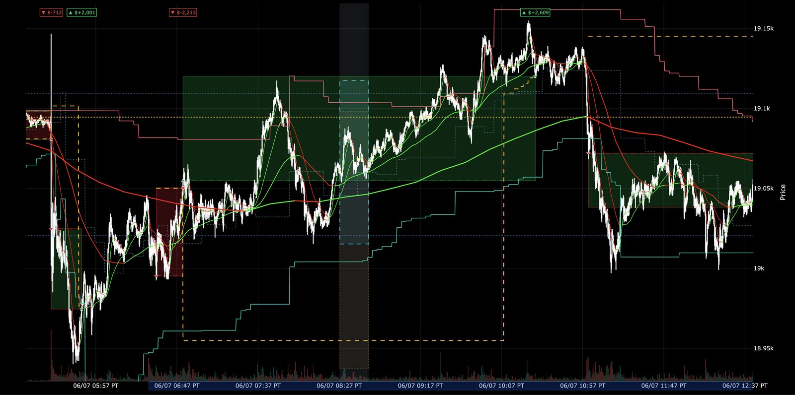

A backtest of one of my earlier strategies reported over $2 million in profit across two years. An AI coding agent had implemented and backtested it, and I was excited. Then I dug into the trade log and found orders filling at a bar's open price while the signal that triggered them fired at that bar's close: a look-ahead bias. After the fix, the profit went down to around $220K. All algo traders have been there at some point in their research.
That taught me a vital lesson, and the lesson is mostly about speed. An AI agent can now write a strategy faster than I can check it, including incorrect implementations based on incorrect assumptions. The question is how I can leverage the power of AI, yet develop reliable, rigorously validated strategies.
The harness I built is verification machinery. I define the hypothesis and the evidence that would settle it, Claude Code and Codex implement and analyze it, and deterministic code computes every number along the way. Each iteration diagnoses what isn't working and carries that diagnosis into the next attempt, so the harness gets smarter about a strategy the longer it works on it. A candidate advances only when its code, its trades, and its behavior all pass.
- Frame. I write a testable market hypothesis and its failure condition.
- Build. Two agents implement it independently in separate sandboxes.
- Review. Each agent reviews the other once; both address the findings.
- Measure. Deterministic backtests produce trade-level artifacts.
- Inspect. An agent selects charts by regime, and I review the behavior; fixes found here go back to Build.
- Diagnose. A regime-analysis agent reasons about where the idea works, where it fails, and why.
- Reproduce. Candidates that pass run in independent backtest engines and data paths.
- Improve. The agents propose paths to fix the weakest part, and I decide which to pursue.
I have written about pieces of this system before: the interactive chart tool, the data pipeline that turns 300 GB of ticks into backtests that run in minutes, and the 15-second timestamp bug that an independent data comparison exposed. This post is how the pieces fit together.
Part 1How the loop works
Start with a specific hypothesis
I don't start an agent with “find me a profitable strategy.” I tried, and it generally doesn't work :)
Instead, I start with a mechanism. For example:
A trend-following strategy is vulnerable when its direction flips repeatedly in a short window. Block new entries after four flips in the trailing 30 signal bars, then compare it with the ungated strategy on the same periods.
Before implementation, I define what counts as a flip, when it becomes observable, when the next order can fill, the transaction costs, position limits, data windows, baseline, and pass criteria.
None of that is negotiable after the results come in. If a variant fails with one tick of slippage, the answer is that it failed, not that we should revisit the slippage model.
Implement it twice, in independent sandboxes
Two coding agents (I use Claude Code and Codex) get the same specification, data contract, and baseline, then each builds in its own sandbox without seeing the other's work. Agreement between two independent implementations doesn't prove the idea works, but disagreement always points at something real: an ambiguous spec, a data difference, or a bug.
Claude Code doubles as the orchestrator of the whole loop. It runs the experiments end to end and communicates with Codex through the Codex MCP server, so the second implementation and the cross-review happen without me shuttling anything between tools.
In one early experiment, the two implementations traded very differently from the same spec. The cross-review traced it to a trigger bug in one of them, the fix went in, and the implementations converged. Each agent reviews the other's code exactly once; in my experience, more passes add more noise than signal.
Agents review the code and fix the bugs
After both implementations are complete, each agent reviews the other once. The checklist flexes with each experiment, but these are typical checks:
- Is every feature based only on information available at that timestamp?
- Are higher-timeframe values exposed only after the bar closes?
- Are orders filled at prices that could have been traded?
- Are commission, slippage, sizing, and session rules identical?
- Does the code implement the written trigger, including its state transitions?
- Can the headline result be recomputed from the raw trade log?
After the fixes and rerun, I compare entry times, indicator values, fills, and independently recomputed P/L. If a difference stays unexplained, I mark the experiment inconclusive instead of arguing it to a verdict.
The process earns its keep on negative results too. In one review, an agent re-aggregated all 1,628 trades from the other implementation's raw trade log and found identical timestamps and zero P/L difference. The idea genuinely didn't work, and now we knew that instead of suspecting it.
Review the trades on charts
A summary can tell me a strategy made money. It can't tell me the strategy did what I meant.
After a run, an agent uses my backtest chart tool to produce a small audit set: strong winners, large losses, unusual holding periods, regime boundaries, and examples around the exact rule being tested. The selection is deliberate across market conditions, so I'm not just admiring trades from the periods that flattered the strategy. Each chart includes candles, entries, exits, stops, indicator values, volume, and hover details from the trade log.
I review those examples and ask plain questions. Did the stop move for the reason we intended? Did a higher-timeframe signal appear too early? Did a filter stay active through a trend, or switch on and off every few bars? Are repeated entries genuine opportunities or the same signal firing continuously?

Charts keep exposing rules that are mathematically valid but behave badly. Sometimes a chart hands me the next test, like comparing an initial stop fitted to the current trend against the tightest available stop line. When that happens, the comparison gets written up as a new hypothesis and enters the loop at the top; the current result is never adjusted by hand.
Keep a memory of every idea
None of this works without memory. An experiment registry records the parent hypothesis, configuration, data snapshot, baseline, costs, result, and verdict for every run. Failed tests stay in the registry on purpose. They keep the total trial count visible, and they stop an agent from proposing the same idea again under a new name.
Each finished experiment also writes a short report in a fixed format: the question, the data window, the baseline on that same window, the method, the results, and a verdict of pass, in-sample only, or fail. A master findings log holds a one-line summary of every report, and agents read that log before proposing anything new. The negative results end up doing as much work as the wins, because they mark the dead ends.
The registry also tracks lineage. Every hypothesis records which idea it descends from, so I can trace how a mechanism evolved across experiments. And when a bug is found, results produced before the fix are not deleted; they get a pre-fix label so an old inflated number can't be quoted later as if it were still true.
One strategy family went through about 250 configurations without producing a robust full-history result. That record is a useful output in itself: it tells me to spend research time elsewhere, and there is no configuration #251.
Test the result in another engine
Two implementations can still share one engine's bug, so stronger candidates get rerun in independent systems:
- a readable Python backtester is the research reference;
- LEAN runs the same strategy against the same local market data;
- QuantConnect cloud runs it on an independent data path;
- TradingView and Pine Script provide an additional visual and execution-semantics check when appropriate.
One note on platform fit: neither QuantConnect nor TradingView is a great backtesting platform for order flow trading, since they don't replay market depth. For price-action strategies like the ones here, both work well.
I compare trade counts, timestamps, prices, costs, and P/L. Some differences are expected near contract rolls, session boundaries, and ambiguous intrabar fills. I investigate every unexplained difference.
For one combined strategy, the Python backtest produced $1.196 million. LEAN reproduced 96.5% of that result, and QuantConnect produced 102.4%, with trade counts within 4% across the three systems. That's the passing grade: the implementation transferred across engines and data paths. It did not prove profitability, because walk-forward evaluation was still pending.
Agreement has limits, though. One of the inflated early results had also been cross-checked, and an independent LEAN reimplementation matched it within 3% because both versions had faithfully implemented the same wrong fill assumption. Cross-engine agreement validates the implementation but not the assumptions behind it, which is why fill realism gets audited separately.
Part 2A worked example
I had a trend-following algorithm that was profitable over two years of NQ backtests. Trend followers ride some form of moving average or regression line, and those are laggy indicators. The algorithm made its money riding big trends, and it gave a lot of it back in choppy, consolidating markets. I wanted to improve that.
The obvious questions lined up quickly. Should we use a tighter stop? It can cut trends short prematurely. Should we re-enter when we get stopped out and the trend keeps going? Should we fade extended moves and take mean-reversion trades against them? Should we lean on market levels like support, resistance, point of control, trendlines? Out of that came three hypotheses worth testing: re-entry, fading extended moves, and a dynamic stop based on recent trend and choppiness. I'll skip the exact rules and parameters, because the edge is not the point of this post; the process is. The numbers and curves below focus on that progression, at no more than four NQ contracts.
Iterations one and two: the stop trap. The tighter stop came first, because it is everyone's first idea. It cut the give-back exactly as intended and cut the winners with it; profit fell by more than half. Iteration two tried to rescue it with naive re-entry: stopped out, trend still going, get back in. On trend days it looked brilliant. Across the full history it churned every consolidation, paid friction on every false start, and finished at minus $602K. The regime agent's post-mortem was blunt: two-thirds of the exits were direction flips inside chop, and the chart set it handed me was one consolidation day after another with the entry clusters marked.
Iteration three: re-entry with discipline. The agents proposed conditions under which re-entry had historically paid, and the sweep kept only the strict version: re-enter only when the trend is steep and price is near the structure that defined it. Twenty to thirty parameter variants ran on short windows first, survivors were promoted to the full history, and each variant came back with a one-page summary and regime-selected charts. This was the first build to beat the baseline.
Iterations four and five: the fade that didn't generalize. Fading extended moves on its own bled money in every trending regime. Restricting the fades to major levels looked better and even beat the baseline on the full history, but the regime table showed the extra profit came from a handful of months, and the charts showed entries that only worked in one kind of tape. Both rejected. This is where the regime analysis earns its place: it killed a profitable-looking build for the right reason.
Iterations six through eight: the dynamic stop. The third hypothesis was the winner. Widening the stop while the trend is strong and tightening it as chop rises attacked the original problem directly, and it stacked cleanly with disciplined re-entry. Two sweep cycles and one combination pass later, the final build sat at $1.41M with a Sharpe of 2.2 and a maximum drawdown of about $180K.
Research context. I chose this example because it makes the iteration process easy to follow. The figures illustrate the research workflow; they are not intended to rank strategies or represent expected live performance. They are in-sample research results, not investment advice. A single strategy can go through long flat or losing periods. A smoother portfolio equity curve usually comes from combining multiple independently validated strategies whose returns are not highly correlated.
The full record looks like this:
| Iteration | Net P/L | Sharpe | Max drawdown | Verdict |
|---|---|---|---|---|
| 0 · pre-tested baseline | $785K | 1.6 | -$210K | the bar to beat |
| 1 · tighter stop | $342K | 0.9 | -$145K | rejected |
| 2 · + naive re-entry | -$602K | -0.9 | -$760K | rejected |
| 3 · disciplined re-entry | $868K | 1.7 | -$220K | kept |
| 4 · fade extended moves | $214K | 0.4 | -$390K | rejected |
| 5 · fade only at levels | $912K | 1.8 | -$235K | rejected |
| 6 · dynamic stop, chop-aware | $1.09M | 1.9 | -$205K | kept |
| 7 · + trend-strength scaling | $1.22M | 2.0 | -$195K | kept |
| 8 · combined and tuned | $1.41M | 2.2 | -$180K | kept |
Eight iterations, four rejections. Iterations are not only additive either: a later pass is free to retune the parameters an earlier one introduced, which is what the final combination pass mostly did. Every row cost one trip around the loop: agents ran the sweeps and wrote the summaries, the regime analysis chose which charts deserved my eyes, and I chose what to keep. The failures stay in the table for the same reason they stay in the registry: they are part of the record, and they are what stop the same idea from coming back next quarter.
All of it is the discovery-stage view: full-history comparisons, not live results. From here the strategy enters the walk-forward and cross-engine gates like any other candidate, and the registry records the outcome either way.
Part 3Seven gates to deployment
Agents can test many ideas quickly. More tests also create more false positives, so each candidate must pass a fixed set of checks:
| Gate | Question | Required artifact |
|---|---|---|
| 1 · Static validity | Is the result structurally possible, with correct data, timing, fills, costs, and implementation? | Validation checks and a trade log that reconstructs the result |
| 2 · Discovery | Does the rule behave as specified, and does the net result justify a larger test? | Experiment record, unchanged baseline, and chart audit |
| 3 · Rolling validation | Does the candidate survive chronological walk-forward testing and reproduce on another engine or data path? | Paired rolling results and cross-engine reconciliation |
| 4 · Multiple-testing adjustment | Does the result remain interesting after accounting for every variant that was tried? | Experiment registry, trial count, sensitivity checks, and overfitting diagnostics |
| 5 · Sealed test | Does the frozen candidate pass one untouched final holdout? | Frozen code and rules, preset criteria, and an independent result |
| 6 · Prospective shadow execution | Does it behave correctly on incoming data without placing live orders? | Shadow logs, execution reconciliation, and monitoring evidence |
| 7 · Constrained capital | Does prospective evidence justify a small allocation under external risk controls? | Hard limits, monitoring, rollback, kill switch, and human approval |
This is the same promotion sequence described in detail in Seven Gates Between an Idea and Live Money. Gate 1, static validity, is checked before a full backtest.
Ending notes
The final decisions in this system stay with me. Inside its sandbox, an agent can write code, run tests, inspect trades, and prepare a proposal. It cannot change the cost model, redefine the baseline, promote its own result, or allocate capital. Nothing in this system can place a trade, and my own decisions go into the same registry as the agents' experiments, because a human cherry-picking results is still cherry-picking.
This describes an independent research workflow, not investment advice or a claim of live trading performance.